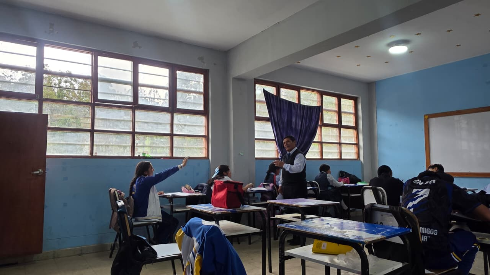
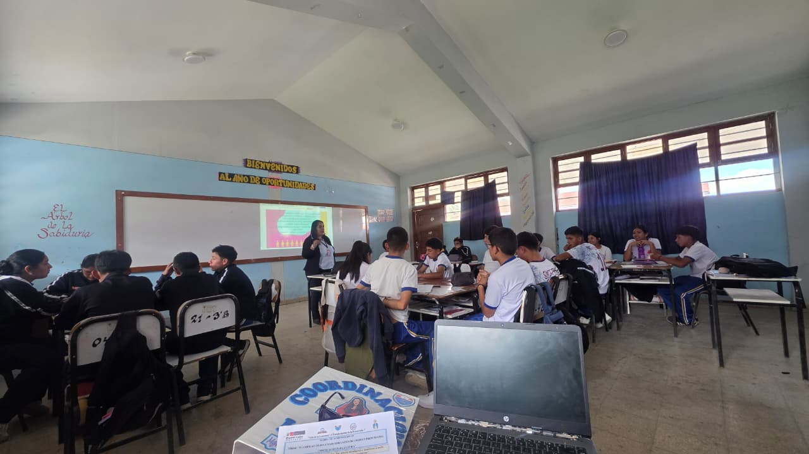
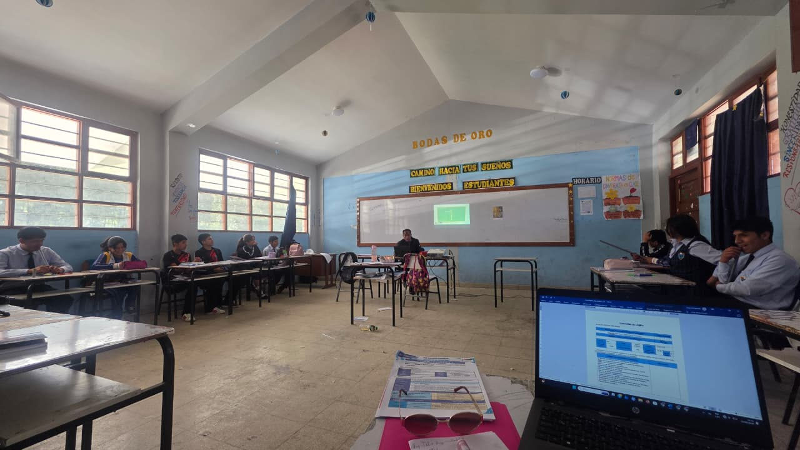
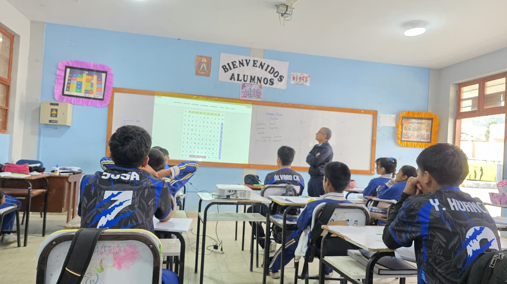

📘 Monitoreo Pedagógico según MINEDU
El monitoreo pedagógico es un proceso sistemático de recojo y análisis de información sobre la práctica docente,
con el objetivo de mejorar los aprendizajes de los estudiantes y fortalecer la calidad educativa.




📋 Características del Monitoreo
- ✔ Formativo y reflexivo
- ✔ Sistemático y permanente
- ✔ Integral en todo el proceso educativo
- ✔ Flexible según el contexto escolar
🎯 Aspectos que evalúa el Minedu
Uso del tiempo: Aprovechamiento efectivo de la sesión de aprendizaje.
Estrategias pedagógicas: Metodologías activas y participación estudiantil.
Evaluación formativa: Retroalimentación constante para mejorar el aprendizaje.
Clima de aula: Respeto, convivencia y disciplina positiva.
🔄 Proceso del Monitoreo
1. Planificación: Organización del cronograma y coordinación con docentes.
2. Observación: Registro de evidencias dentro del aula.
3. Análisis: Interpretación de la información recolectada.
4. Retroalimentación: Diálogo reflexivo y compromisos de mejora.
📌 El monitoreo no es punitivo, sino formativo y orientado a la mejora continua del docente.
← Volver al inicio